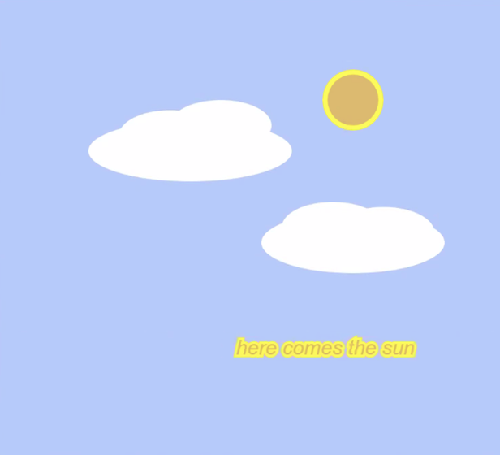

| HOME | MY BIO | GALLERY |

This is a Raster image I created in Photopea.
Credits to pictures utilized in this image with creative commons license:
"Kittens!" by London
"Webtoon" by Effie.Y.
"Pancakes" by Sean MacEntee
"clouds" by chotda
"Puppy Dylan" by Pirate Scott
Selfie belongs to Alissa Montero.

Cute GIF I made of kitten running and my first official GIF animation.
This is an animation I made for class, representing the sadness and loneliness one is prone to feeling one time or another in life.
This is a newsletter I created for my Graphic Design class.
.jpg)
Dove representing peace and hope I made.
This is a rose newsletter I created.
Cute dog mascot I made in Illustrator, it's a vector image.
This is my p5 sketch
My social cause is protesting about how pets are mistreated around the world, often abandoned and left to fend for themselves in the street. But sadly most die from starvation, being hit by cars, illness or violence. Adopt pets responsably and never abandon them under any circumstances; it is cruelty to leave them without a caretaker. Many organizations such as the ASPCA fight everyday to save many animals' lives, you can help millions of dogs and cats to be rescued with even just a dollar. You can volunteer at your local animal shelter or you can donate at ASPCA.org